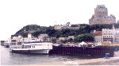
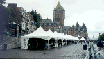
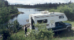
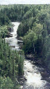

|
(Cliquez sur l'image pour
ouvrir un pop up)
|
Après deux mois de soleil ininterrompu
les Québécois ont vu arriver la pluie et les
deux auvergnats, ce qui explique pourquoi cette vue de
Montréal prise du haut de la tour olympique est
brumeuse ... mais c'est tout de même magnifique !
|
|

Le port de Québec et le
Château Frontenac, gigantesque hôtel datant du
siècle dernier. La pluie ne nous avait pas encore
quittés ... mais le moral était au beau fixe !
|

Les bouquinistes, sur la
promenade qui surplombe le St Laurent, ont eu la bonne
idée de mettre des tentes ... très utiles ce
jour là ! La pluie nous suit depuis
Montréal... pas chanceux les auvergnats ! Mais,
malgré le temps maussade, ce fut une belle
journée en compagnie d'une gentille (et charmante dit
mon mari !) internaute qui nous a accompagnés dans le
vieux Québec animé par les Fêtes de La
Douce France.
|
|

|
Voilà le véhicule ! 190
cv TD chauffage, clim, douche etc ... et 4x4 en plus!
Parfaitement agencé, vite en place, vite prêt
à partir, confortable ... un rêve ! En France
ce type de véhicule ne se fait pas, dommage !
La formule "boîte-campeur" sur pick-up est
pourtant idéale !
|
|
|
Mauvais temps, froid et venté,
un temps de Toussaint début août !
Le Lac Jacques Cartier était agité
! le chauffage du "motorisé" a servi pour la
première fois !
Immenses étendues sauvages, peu de monde
... Le dépaysement est total.
On aurait envie de tout photographier.
Peut-être verrons-nous des animaux sauvages ???
|
|

La chute
Si vous entrez directement : Vers l'entrée du
site, cliquez ici
|
Val Jalbert est un village "fantôme" qui a
été construit pour loger les travailleurs
d'une pulperie (fabrication de pâte à papier)
qui utilisait la puissance de la chute toute proche en 1902.
Il a été abandonné en 1927
à la suite de la faillite de l'entreprise.
Tombé dans l'oubli, il a été
rénové à partir de 1970 et son charme
mystérieux est bien mis en valeur dans ce
musée en plein air.

|